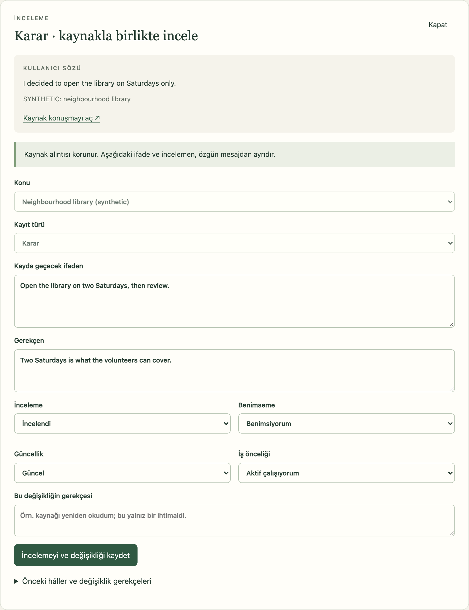

Pick up your thinking where you left off.
töre keeps the ideas, decisions and open questions from your AI conversations connected to their sources, so you can return to a topic and continue with the right context.

The question
Where did I leave off?
Long conversations with AI tools produce decisions, reasons and open questions, and then they scroll away. Weeks later it is hard to say what you decided, why, what changed and what is still open.
töre is built around returning to that unfinished thinking.
How it works
From past conversations to your next one
-
01
Bring your conversations
Import conversations you already have from ChatGPT, Claude or Codex into a local workspace on your own computer.
-
02
Review what matters
töre proposes source-linked candidates: decisions, opinions and open questions. You review each one and decide what to adopt, what to revise and what stays open.
-
03
Continue with context
When you return to a topic, you pick the reviewed context to carry forward and paste it into the AI tool of your choice. Nothing goes anywhere unless you send it.

New in 0.15 · Claude Code plugin
Let your AI tool pick up where you left off
Open a topic to Claude Code and it reads your adopted decisions, open tasks and open questions, nothing else. If you allow it, it can leave a proposal: a task result, a new question, an objection to one of your positions.
Proposals wait in an inbox with the tool's name on them. The tool never writes your notebook, and nothing it writes becomes your view or closes a task until you decide.
The töre plugin for Claude Code sets this up in two commands. It contains no data: it connects to the töre on your own computer, and a new töre starts with an empty notebook.
Map of my thinking
Let a reader see where you stand, and why
The map arranges records you already have into starting points, positions, the places where you part ways with a thinker or a tradition, and your open questions. Under any position you can write an objection, your answer to it and the evidence that would change your mind.
töre does not work out your views for you. Each record keeps its source quote and its review state, and one you have not reviewed is shown as awaiting review, never as your view. With your explicit consent töre writes the map to a single file on your computer, in Turkish or English; it sends it nowhere.
Thinkers
Place your notes next to the thinkers you read
töre includes an editorial catalogue of eight thinkers, from Ibn Khaldun to Weber, with their works, ideas, criticisms and stated limits. You link your own records to a thinker yourself, with an optional note.
töre does not score your affinity, rank you or infer an identity. Linking and unlinking both need your explicit confirmation.
Principles
Your thinking stays yours
-
Three voices stay distinct
The original quote, your own words and the AI's interpretation are kept apart and labelled.
-
Nothing becomes your view silently
An open question cannot quietly turn into an adopted belief. Closing it takes an explicit action and a reason.
-
Local by default
The prototype runs on your own computer. Organising topics does not call a language model. Optional connections to AI services exist but are experimental.
Next goal
A thinking partner that argues back, with sources
töre's next goal is a reasoning partner built on your own notebook. You set the principle it reasons from. When you state an idea, it tries to understand why you find it convincing, then raises the strongest pessimistic objection it can document.
Objections must be backed by your own töre records or by sources written by people, not AI: peer-reviewed papers, official statistics, primary documents. If it cannot find a source, it says so instead of arguing for the sake of it. The final decision always stays with you.
A first version runs today on the developer's own archive, through Claude Code and töre's connection for AI tools. It is an experiment, not part of the current release.
Status
A preview candidate, not a finished product
- Stage
- Preview candidate, in active development
- Interface
- Turkish for now
- Platform
- Tested on macOS only
- Availability
- Source on GitHub (version 0.15.0). You build it yourself; there is no installer yet.
- Checks
- 180 Rust tests and 210 interface tests pass on 0.15.0. töre itself calls no language model; a connected tool only reads what you open and leaves proposals you accept or dismiss.
- Licence
- Open source under AGPL-3.0. A separate commercial licence is available.
Who is behind it
An independent project
töre is an independent, open-source project in development, built with AI tools. The long-term aim is to help people keep continuity across their conversations and other records of thought, while keeping control over their ideas and what they share.
Contact
Follow along
For questions or bug reports, open an issue on GitHub, or follow töre on LinkedIn.